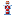

ของอีโวรายเผ่า (EP + ไอเทม)
| เผ่า | ขั้น → ของที่ต้องใช้ |
|---|---|
Slime  | MetalSlime: Magic Ore 100 → DemonSlime (เนื้อเรื่อง) → GodSlime EP 2M[1] |
| Ghoul → Vampire |  เลือด Zane 1 (จาก Ghoul) / คนต้องใช้ 5 → Overcomer 150k → Lord 400k → Divine 2M[4] |
| Orc | HighOrc EP 5k → OrcLord Royal Blood 10 → Disaster 200k → SpiritBoar 400k → Divine 2M[5] |
| Lizardman | Dragonewt Dragon Essence 10 → True 800k → Divine 2M[6] |
| Ogre | Kijin Spirit 1 / Enlight 100k → Mystic Elemental Essence 10 / Wicked  Demon Essence 10 → Spirit/Death 400k → Divine 2M[7] Demon Essence 10 → Spirit/Death 400k → Divine 2M[7] |
| Giant | Ancient EP 300k + Ancient Debris 20 → Divine 2M[8] |
| Goblin | Hob 2k → Enlight 100k → Saint 400k+บอส 4 (ไม่มีของ) |
| Human/Elf/Dwarf/Merfolk | Enlightened 100k → Saint 400k+บอส 4 → Divine 2M (ไม่มีของ) |
| Wight / Harpy / Daemon | EP ล้วน: WightKing 200k→800k→2M / Queen 200k→800k→2M / Greater 20k→Arch 140k |
ไอเทมบอส / เควส หาได้จากที่ไหน
| ไอเทม | วิธีหา |
|---|---|
| Eye of Ender (Altar) | วางบน Obsidian Altar เสก Obsidian Pillar[2] / ดอก Starlight ใช้หาโครงสร้างบอสแทนได้ |
| Charybdis Core | วางในที่สปอว์น เลี้ยงฆ่าถึง 100k (เรืองแสง) คลิกขวาฟัก / Raphael ต้องดูด 5 core |
| Pure Magisteel Block | Colossus ดรอป / โยน block กลางอารีนาเสกใหม่ / เกราะ pure เควส 2C04AF:1936 |
| Mithril Block | ผสม Magisteel 5 + Silver 4 / ใช้เสก Feldway คู่ Pure 3x3 ใน Paths |
รางวัลเควส 2C04AF:1079 / ดูดมอนด้วย Predator ได้สกิลเพิ่ม | |
| เกราะ low/high/pure + schematic | คราฟต์ตามเควส 2C04AF:770,1897,1936 schematic 2BBC87:958 |
| Slime Crown | ไม่มีในไฟล์เควส ให้ฆ่า Supermassive Slime ตามเควสล่าบอส① แทน |
| Teleport Catalyst / Silver/Iron ore | เควสต้นเกม Afterdark 09FB72:60,96,115,134 |
ของทำอาหาร (Gourmet)
เตา/หม้อ/เขียง/โม่/ซึ้ง/น้ำมัน/มะเขือ/พริก/ผัก[3] + เตา TNO (:282) — สาย Chef/Gourmand ต้องมี
ที่มาข้อมูล (ไฟล์เกม 8 จุด)
race/slime_config.toml:40,110quest.66D414A26E25F69Cchapters/1D140D9D2A18ECED.snbt:38-242vampire_config:29,31orc_config:57lizardman_config:29ogre_config:29,85,113giant_config:29